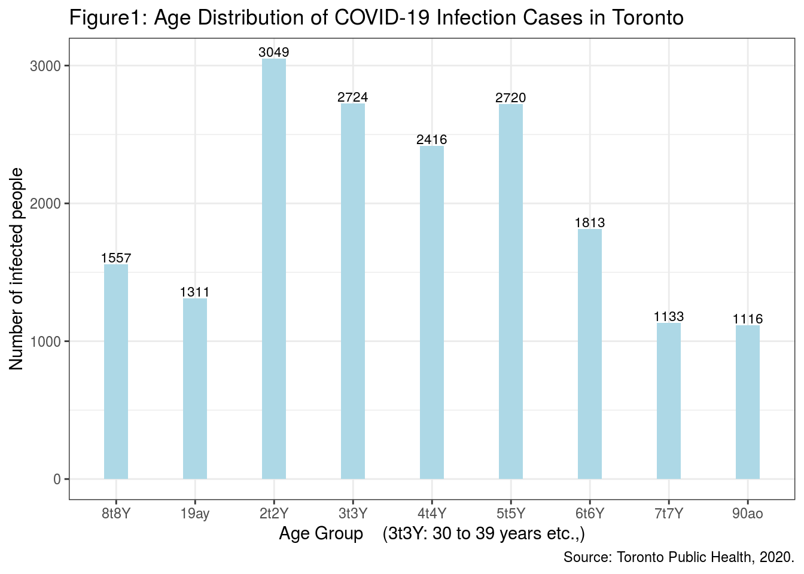
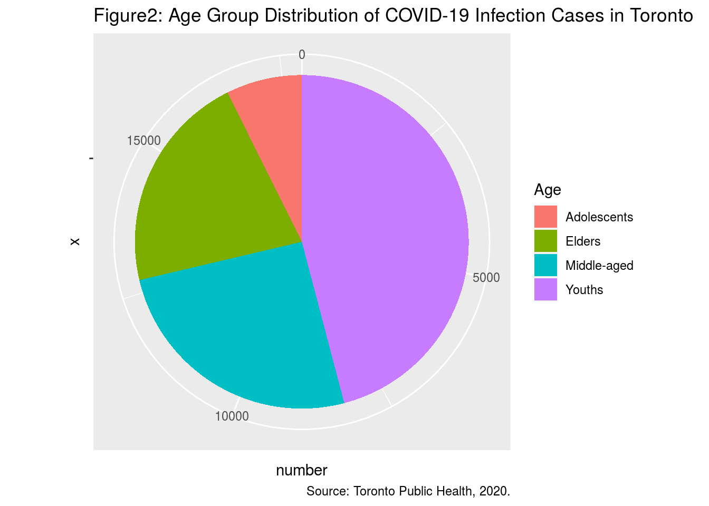
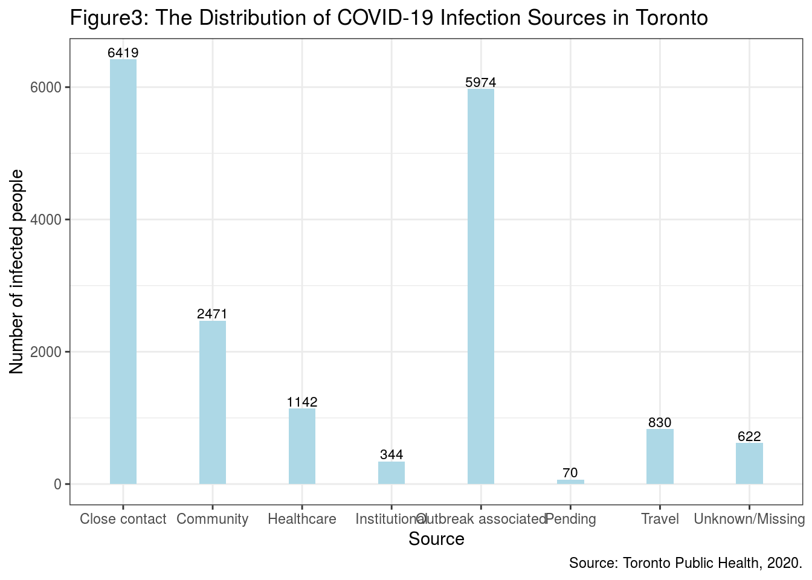
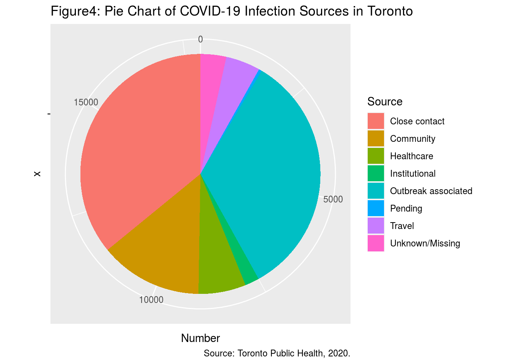

Author: Yifan Xu
Date: 2020.09.25
Abstract
The current new coronavirus has swept the world for more than half a year, and there is still an increase of more than 1,000 cases in Canada everyday. In this paper, we explored the dataset about COVID-19 Cases in Toronto, which is a non-probability survey published by Toronto Public Health. We found that young people have a higher infection rate of COVID-19, and we also found the main source of infection is close contact. This could remind people to keep the social distance and wear masks at all times, in order to reduce the chance of infection especially at the current stage of returning to work and school.
Introduction
It has been half a year since the first case of new coronavirus infection was reported on January 27 in Canada. There is still a daily increase of more than 1,000 confirmed cases, and Ontario also has a large daily increase. Against the situation, we wanted to explore the susceptible age group and the common infection source. We found that close contact is a major way of virus transmission, followed by community contact. Besides, compared with middle-aged and elderly people, COVID-19 infections mostly occur in teenagers and young adults.
We used the data set published by Toronto Public Health, which collects information on COVID-19 cases in Toronto. We are interested in two variables: the source of infection and age of infected people. The main method is plotting figures to determine common sources of infection as well as grouping ages to identify the susceptible population. (we used @R and @Rmarkdown)
Below we will briefly introduce the variables of the data but focus on two variables we care about, then conduct the analysis to get conclusions. In the future, we hope to collect data from other parts of Canada and analyze again, so that we could test whether our conclusions are applicable or biased.
Data
The COVID-19 Cases in Toronto Data set counts the information on all 17,872 confirmed and probable cases in Toronto, including their demographic (eg: gender), geographic (eg: neighborhood name) and severity information (eg: currently hospitalized or not). Table in appendix shows the data of first six confirmed persons.
Among 16 variables, we care about the threat of COVID-19 to people of different ages and how they are infected. Therefore we focus on ‘Age Group’ and ‘Source of Infection’.
Figure1 (showing in appendix below) shows the age distribution of the infected cases. The youngest infected are 19 years or younger, and the oldest infected are older than 90. We also find that the most infected persons are between 20 and 29 years old and the least are between 70 and 80 years old. (we used @tidyverse)
We could clearly identify the distribution is right-skewed, which means that the number of people infected with COVID-19 will decrease with age, with young people at the highest infection rate.
To be more concise, we combine the age groups as: 19 and younger (Adolescents), 20-49 years old (Youths), 50-69 years old (Middle-aged) and over 70 years old (Elders), then recalculate the number of infections in each age group.
The pie chart in Figure2 (showing in appendix below) shows that youths account for nearly half of the infected cases, which is much higher than teenagers and elders. (we used @tidyverse)
Similarly, we also want to explore the source of infection. Figure 3 (showing in appendix below) indicates that most people were infected during the outbreak or due to close contact. (we used @tidyverse)
In Figure 4 (showing in appendix below) , we can intuitively see that apart from the infection during the outbreak, close contact and community contact are two main routes of virus transmission. (we used @tidyverse)
Discussion
We found that the age of people infected with COVID-19 in Toronto is mostly between 20 and 29. It is suggested that youths are more likely to be infected compared with middle-aged and elderly people. We also know that COVID-19 is easily transmitted through close contact and community contact among people.
However, the limitations of the data set was twofold: 1) the data is extracted every Monday and released every Wednesday, which is not real-time, resulting in a deviation of the confirmed cases in a week, and 2) the age of a few confirmed cases or the source of infection is unknown, therefore those missing values will affect the accuracy of results.
Weaknesses and next steps
The weaknesses is that we draw the conclusion only based on the data from Toronto area, so there may be some regional biases. In the next step, we hope to explore the data set from other regions in Canada even around the world, and analyze again to ensure the conclusions are general enough.
Appendix
#code
library(opendatatoronto)
library(tidyverse)## ── Attaching packages ───────────────────────────── tidyverse 1.3.0 ──## ✓ ggplot2 3.3.2 ✓ purrr 0.3.4
## ✓ tibble 3.0.3 ✓ dplyr 1.0.2
## ✓ tidyr 1.1.2 ✓ stringr 1.4.0
## ✓ readr 1.3.1 ✓ forcats 0.5.0## ── Conflicts ──────────────────────────────── tidyverse_conflicts() ──
## x dplyr::filter() masks stats::filter()
## x dplyr::lag() masks stats::lag()package1 <- show_package('64b54586-6180-4485-83eb-81e8fae3b8fe')
resources1 <- list_package_resources(("64b54586-6180-4485-83eb-81e8fae3b8fe"))
datastore_resources1 <- filter(resources1, tolower(format) %in% c('csv', 'geojson'))
data <- filter(datastore_resources1, row_number()==1) %>% get_resource()
head(data)## # A tibble: 6 x 18
## `_id` Assigned_ID `Outbreak Assoc… `Age Group` `Neighbourhood … FSA
## <int> <int> <chr> <chr> <chr> <chr>
## 1 143647 1 Sporadic 50 to 59 Y… Willowdale East M2N
## 2 143648 2 Sporadic 50 to 59 Y… Willowdale East M2N
## 3 143649 3 Sporadic 20 to 29 Y… Parkwoods-Donal… M3A
## 4 143650 4 Sporadic 60 to 69 Y… Church-Yonge Co… M4W
## 5 143651 5 Sporadic 60 to 69 Y… Church-Yonge Co… M4W
## 6 143652 6 Sporadic 50 to 59 Y… Newtonbrook West M2R
## # … with 12 more variables: `Source of Infection` <chr>, Classification <chr>,
## # `Episode Date` <chr>, `Reported Date` <chr>, `Client Gender` <chr>,
## # Outcome <chr>, `Currently Hospitalized` <chr>, `Currently in ICU` <chr>,
## # `Currently Intubated` <chr>, `Ever Hospitalized` <chr>, `Ever in
## # ICU` <chr>, `Ever Intubated` <chr>get_age_group <- table(data$`Age Group`)
age <- c("19 and younger","20 to 29 Years","30 to 39 Years","40 to 49 Years","50 to 59 Years","60 to 69 Years","70 to 79 Years"," 80 to 89 Years","90 and older")
number <- c(1311,3049,2724,2416,2720,1813,1133,1557,1116)
dataframe_age <- data.frame( Age = age, number = number)
barplotage <- ggplot(dataframe_age, aes(x= Age, y = number)) + geom_bar(stat="identity",position=position_dodge(0.4),width=0.3,fill ="light blue") + theme_bw() + scale_x_discrete(label=abbreviate) + labs(x = "Age Group (3t3Y: 30 to 39 years etc.,)",
y = "Number of infected people",
title = "Figure1: Age Distribution of COVID-19 Infection Cases in Toronto",
caption = "Source: Toronto Public Health, 2020.") + geom_text(aes(label=number), vjust=-0.2, size=3)
barplotage
age3 <- c("Adolescents","Youths ","Middle-aged","Elders")
number3 <- c(1311,3049+2724+2416,2720+1813,1133+1557+1116)
dataframe_age3 <- data.frame( Age = age3, number = number3)
bingage3 <- ggplot(dataframe_age3, aes(x = "", y = number, fill = Age)) + geom_bar(stat = "identity", width = 0.5) + coord_polar(theta = "y") + labs(title = "Figure2: Age Group Distribution of COVID-19 Infection Cases in Toronto", caption = "Source: Toronto Public Health, 2020." )
bingage3
#2
get_way_group <- table(data$`Source of Infection`)
source <- c('Close contact', ' Community','Healthcare', 'Institutional', 'Outbreak associated', 'Pending', 'Travel', 'Unknown/Missing')
number2 <- c(6419, 2471, 1142, 344, 5974, 70, 830, 622)
dataframe_source<- data.frame('Source of Infection'= source, Number = number2)
dataframe_source<- data.frame(Source = c('Close contact', 'Community','Healthcare', 'Institutional', 'Outbreak associated', 'Pending', 'Travel', 'Unknown/Missing'), Number = c(6419, 2471, 1142, 344, 5974, 70, 830, 622))
barplotsou <-ggplot(dataframe_source, aes(x=Source,y=Number)) + geom_bar(stat='identity',position=position_dodge(0.4),width=0.3,fill ="light blue") + theme_bw() + labs(x = "Source",
y = "Number of infected people",
title = "Figure3: The Distribution of COVID-19 Infection Sources in Toronto",
caption = "Source: Toronto Public Health, 2020.") + geom_text(aes(label=Number), vjust=-0.2, size=3)
barplotsou 
bingsource <- ggplot(dataframe_source, aes(x = "", y = Number, fill = Source)) + geom_bar(stat = "identity", width = 0.5) + coord_polar(theta = "y") + labs(title = "Figure4: Pie Chart of COVID-19 Infection Sources in Toronto", caption = "Source: Toronto Public Health, 2020.")
bingsource
References
Toronto Public Health. Sept 23, 2020. About COVID-19 Cases in Toronto. https://open.toronto.ca/dataset/covid-19-cases-in-toronto/
Sharla Gelfand (2020). opendatatoronto: Access the City of Toronto Open Data Portal. R package version 0.1.3. https://CRAN.R-project.org/package=opendatatoronto
Wickham et al., (2019). Welcome to the tidyverse. Journal of Open Source Software, 4(43), 1686, https://doi.org/10.21105/joss.01686
H. Wickham. ggplot2: Elegant Graphics for Data Analysis. Springer-Verlag New York, 2016.
Elin Waring, Michael Quinn, Amelia McNamara, Eduardo Arino de la Rubia, Hao Zhu and Shannon Ellis (2020).
R Core Team (2020). R: A language and environment for statistical computing. R Foundation for Statistical Computing, Vienna, Austria. URL https://www.R-project.org/.
JJ Allaire and Yihui Xie and Jonathan McPherson and Javier Luraschi and Kevin Ushey and Aron Atkins and Hadley Wickham and Joe Cheng and Winston Chang and Richard Iannone (2020). rmarkdown: Dynamic Documents for R. R package version 2.3. URL https://rmarkdown.rstudio.com.